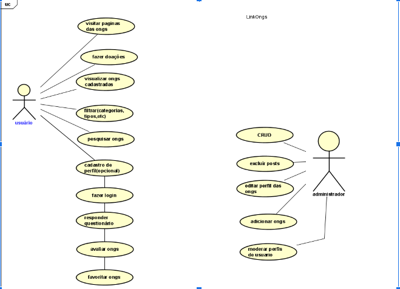
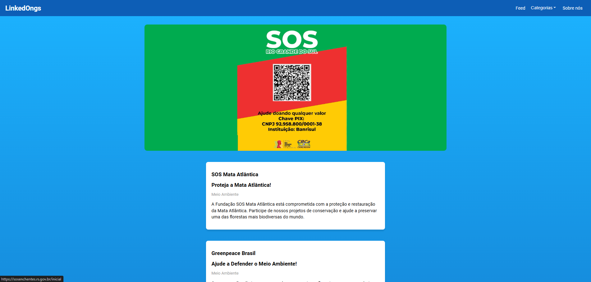
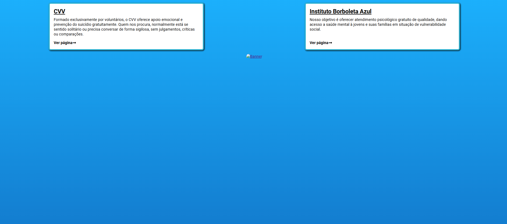
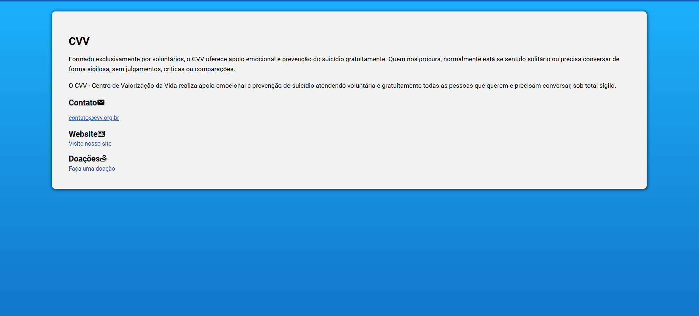

Sobre Nós
A LinkedONGs é uma plataforma inovadora que conecta pessoas com ONGs que fazem um trabalho incrível em diversas áreas. Nosso objetivo é facilitar o processo de doação, promovendo solidariedade de forma simples e eficaz.
Links Úteis
Documentação
-
Diagrama de caso de uso

Páginas
-
Feed
 -
Categorias
 -
Página da ONG

Equipe
Gustavo Andrioli - Estudante de Análise e Desenvolvimento de Sistemas pela Unifil
Murilo Sitta - Estudante de Análise e Desenvolvimento de Sistemas pela Unifil
Tharik Honda - Estudante de Análise e Desenvolvimento de Sistemas pela Unifil
Luan Victor - Estudante de Análise e Desenvolvimento de Sistemas pela Unifil